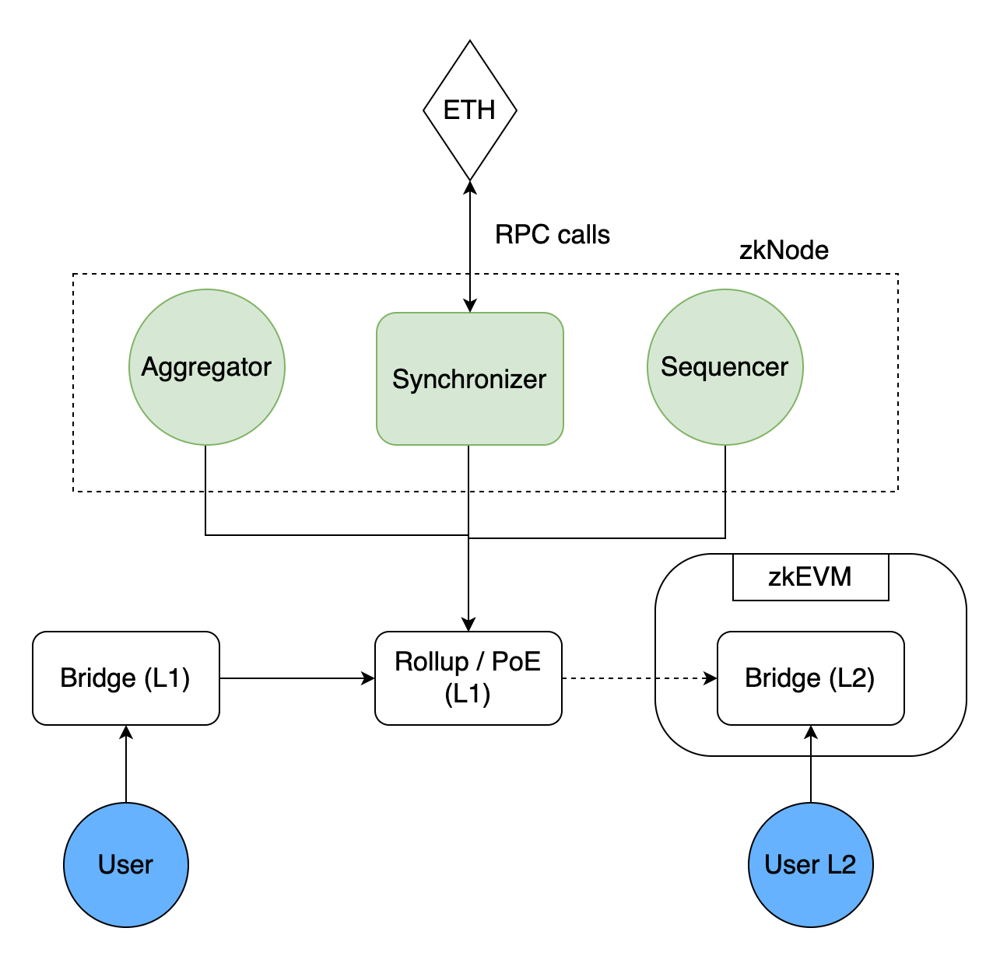
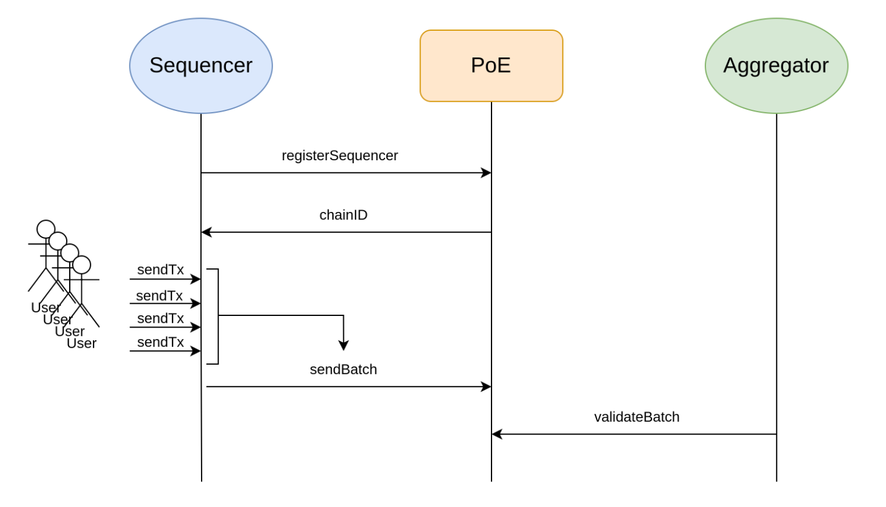
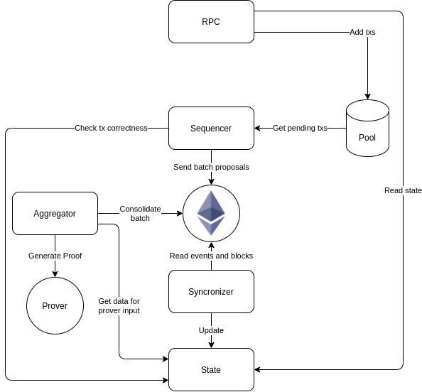
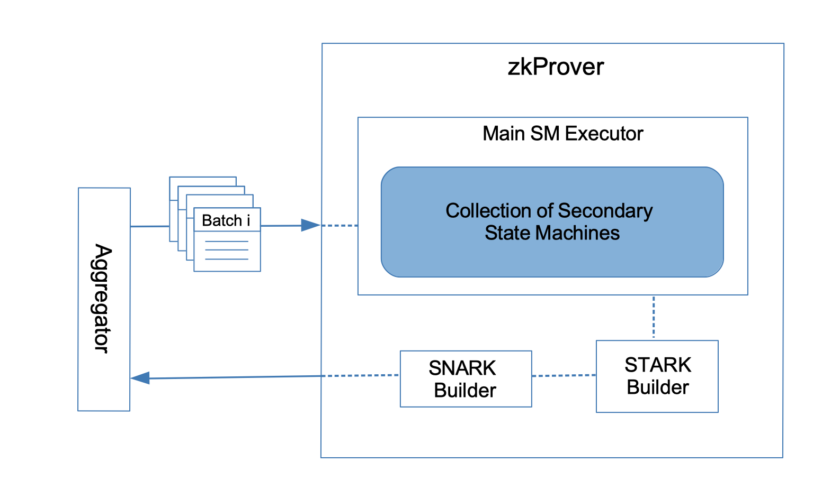
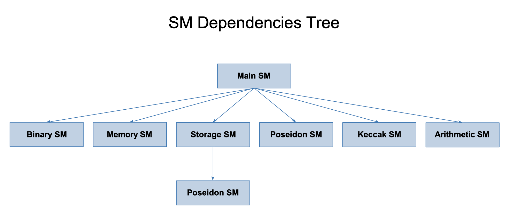
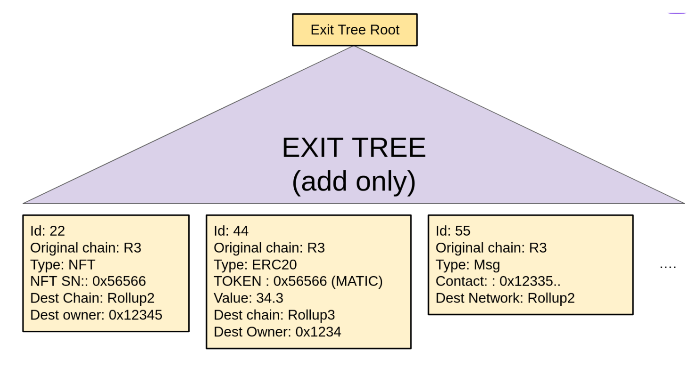

Polygon zkEVM Documentation
Welcome to Polygon zkEVM documentation.
Polygon zkEVM is a decentralized Ethereum Layer 2 scalability solution based on cryptographic proofs to provide validation and fast finality to transactions.
This documentation presents the Polygon zkEVM. Starting with the architectural overview of Polygon zkEVM, the documentation cascades step-by-step into the finer details of zkEVM's sub-components.
We however emphasise that this documentation is still Work In Progress (WIP). Some aspects have been covered in more detail, while others still need further expansion. Also, sections of this documentation might later be reorganized in order to achieve better flow.
zkEVM's Architectural Overview
Over and above what its predecessor was designed to do, the main functionality of zkEVM is to provide smart contract support. It performs the task of state transition resulting from the Ethereum Layer 2 transaction executions (transactions that users send to the network). Subsequently, by employing zero-knowledge proof technology, it generates validity proofs that attest to the correctness of these state change computations carried out off-chain.
The major components of zkEVM are:
- Proof of Efficiency (PoE) consensus mechanism.
- zkNode software including a synchronizer, sequencer and aggregator.
- LX-to-LY bridge.
- zkProver.
- Active users of the zkEVM network who create transactions.
The skeletal architecture of zkEVM is shown below:

Consensus Algorithm: Proof of Efficiency
Our earlier version, Polygon Hermez 1.0, is based on the Proof of Donation (PoD) consensus mechanism. This model decides who would be the next batch creator. PoD is a decentralised auction that is conducted automatically and the participants (coordinators) bid a number of tokens so that they have the chance to create the next batch.
However, for the implementation of the current 2.0, PoD needed to be replaced with a much simpler Proof of Efficiency (PoE) model. Let us see why PoE is preferable to PoD.
Why is PoD not the Best Option?
The PoD model fell out of our preferable options for the reasons listed below:
- The PoD, being an auction model, has proved to be quite complex for both the coordinators and the validators. Besides, it has also proven to be less viable economically.
- This consensus mechanism is vulnerable to attacks, especially during the bootstrapping phases. At any given point in time, the network is controlled by a permissionless participant. This raises the risk for the network to suffer service level delays should such a third party turn malicious or experience operational issues.
- PoD assigns the right to produce batches in a specific timeframe and validators need to be very competitive if they are to gain any economic incentives.
- The efficacy of selecting “the best” operator amounts to a "winner-takes-all" model, which turns out to be unfair to competitors with slightly less performance. Consequently, only a few select operators validate batches more often than others, defeating the concept of network decentralization.
- Another drawback is that the auction protocol is very costly and complex for validators. The auction requires bidding some time in advance.
Why is PoE a Better Model?
The Proof of Efficiency (PoE) model leverages the existing Proof of Donation mechanism and supports the permissionless participation of multiple coordinators to produce batches in Layer L2. These batches are created from the rolled-up transactions of Layer 1. As compared to PoD, PoE employs a much simpler mechanism and is preferred owing to its better efficiency to solve the problems inherent in PoD.
The strategic implementation of PoE promises to ensure that the network:
- Maintains its "permissionless" feature to produce L2 batches
- Is efficient, a criterion which is key for the overall network performance
- Attains an acceptable degree of decentralization
- Is protected from malicious attacks, especially by validators
- Keeps a proportionate balance between the overall validation effort and the value in the network.
Note: Possibilities of coupling PoE with a PoS (Proof of Stake) are currently being explored.
A detailed description of zkEVM's PoE is found here.
Hybrid Mode for On-Chain Data Availability
A full zk-rollup schema requires that both the data (which is required by users to reconstruct the full state) and the validity proofs (zero-knowledge proofs) be published on-chain. However, given the Ethereum setting, publishing data on-chain incurs gas fees, which is an already-existing problem with Layer 1. This makes it difficult to choose between a full zk-rollup configuration and a hybrid one.
Under a hybrid schema, either of the following is possible:
- Validium: Data is stored off-chain and only the validity proofs are published on-chain.
- Volition: For some transactions, both the data and the validity proofs remain on-chain while for the remaining ones, only proofs go on-chain.
Unless, among other things, the proving module can be highly accelerated to mitigate costs for the validators, a hybrid schema remains viable. The team is yet to finalise the best consensus configuration.
The PoE Smart Contract
The underlying protocol in zkEVM ensures that the state transitions are correct by employing a validity proof. To ensure that a set of pre-determined rules have been followed for allowing transitioning of the state, a smart contract is employed. The verification of the validity proofs by a smart contract checks if each transition is done correctly. This is achieved by using zk-SNARK circuits. Such a mechanism entails two processes: batching of transactions and validation of the batched transactions. zkEVM uses two types of participants to carry out these processes: Sequencers and Aggregators. Under this two-layer model:
-
Sequencers propose transaction batches to the network, i.e. they roll-up the transaction requests to batches and add them to the PoE smart contract.
-
Aggregators check the validity of the transaction batches and provide validity proofs. Any permissionless Aggregator can submit the proof to demonstrate the correctness of the state transition computation.
The PoE smart contract, therefore, makes two basic calls: A call to receive batches from Sequencers, and another call to Aggregators, requesting batches to be validated. See Figure 2 below:

Proof of Efficiency Tokenomics: Sequencers and Aggregators
The PoE smart contract imposes a few requirements on Sequencers and Aggregators.
Sequencers
A Sequencer receives L2 transactions from the users, preprocesses them as a new L2 batch, and then proposes the batch to the PoE smart contract as a valid L2 transaction.
- Anyone with the software necessary for running a zkEVM node can be a Sequencer.
- Every Sequencer must pay a fee in form of MATIC tokens to earn the right to create and propose batches.
- A Sequencer that proposes valid batches (which consist of valid transactions), is incentivised with the fee paid by transaction-requestors or the users of the network.
Aggregators
An Aggregator receives all the transaction information from the Sequencer and sends it to the prover which provides a small zk-proof after complex polynomial computations. The smart contract validates this proof. This way, an aggregator collects the data, sends it to the prover, receives its output and finally, sends the information to the smart contract to check that the validity proof from the prover is correct.
- An Aggregator's task is to provide validity proofs for the L2 transactions proposed by Sequencers.
- In addition to running zkEVM's zkNode software, Aggregators need to have specialised hardware for creating the zero-knowledge validity proofs. We, herein, call it the zkProver. (You will read about it later in this document).
- For a given batch or batches, an Aggregator that submits a validity proof first earns the Matic fee (which is being paid by the Sequencer(s) of the batch(es)).
- The Aggregators need to indicate their intention to validate transactions and then they compete to produce the validity proofs based on their own strategy.
zkNode
A zkNode is the software needed to run a zkEVM node. It is a client that the network requires to implement the synchronization and govern the roles of the participants (Sequencers or Aggregators).
zkNode Architecture
The zkNode Architecture is composed of:
-
Sequencers and Aggregators: Polygon zkEVM participants will choose how they participate; either as a node to know the state of the network; or as a participant in the process of batch production in any of the two roles: Sequencer or Aggregator. An Aggregator runs the zkNode but also performs validation using the core part of the zkEVM, called the zkProver (this is labelled Prover in Figure 3 below.)
-
Synchronizer: Other than the sequencing and the validating processes, the zkNode also enables synchronisation of batches and their validity proofs, which happens only after these have been added to L1. This is accomplished using a subcomponent called the Synchronizer. A Synchronizer is in charge of getting all the data from smart contracts, which includes the data posted by the sequencers (transactions) and the data posted by the coordinators (which is the validity proof). All this data is stored in a huge database and served to third parties through a service called "JSON-RPC".
The Synchronizer is responsible for reading the events from the Ethereum blockchain, including new batches to keep the state fully synced. The information read from these events must be stored in the database. The Synchronizer also handles possible reorgs, which will be detected by checking if the lastethBlockNumand the lastethBlockHashare synced.

The architecture of zkNode is modular and implements a set of functions as depicted in Figure 3 above.
-
RPC: RPC (Remote Procedure Call) is a JSON RPC interface compatible with Ethereum. For a software application to interact with the Ethereum blockchain (by reading blockchain data and/or sending transactions to the network), it must connect to an Ethereum node. RPC enables integration of the zkEVM with existing tools, such as Metamask, Etherscan and Infura. It adds transactions to the Pool and interacts with the State using read-only methods.
-
State: A subcomponent that implements the Merkle Tree and connects to the DB backend. It checks integrity at the block level (information related to gas and block size, among others) and some transaction-related information (signatures, sufficient balance). State also stores smart contract code into the Merkle tree and processes transactions using the EVM.
-
zkProver: All the rules for a transaction to be valid are implemented and enforced in the zkProver. A zkProver performs complex mathematical computations in the form of polynomials and assembly language; these are then verified on a smart contract. Those rules could be seen as constraints that a transaction must accomplish in order to be able to modify the state tree or the exit tree. The zkProver is the most complex module; it required developing two new programming languages to implement the needed elements. Read below to know more about zkProver.
zkProver
zkEVM employs advanced zero-knowledge technology to create validity proofs. It uses a zero-knowledge prover (zkProver), which is intended to run on any server and is being engineered to be compatible with most consumer hardware. Every Aggregator will use this zkProver to validate batches and provide validity proofs. zkProver has its own detailed architecture which is outlined below. It consists of a Main State Machine Executor, a collection of secondary State Machines (each with its own executor), a STARK-proof builder, and a SNARK-proof builder. See Figure 4 below for a simplified diagram of the zkEVM zkProver:

In a nutshell, the zkEVM expresses state changes in a polynomial form. Therefore, the constraints that each proposed batch must satisfy are, in fact, polynomial constraints or polynomial identities. That is, all the valid batches must satisfy certain polynomial constraints.
zkProver Architecture
The zkNode Architecture is composed of:
-
Main State Machine Executor: The Main Executor handles the execution of the zkEVM. This is where EVM Bytecodes are interpreted using a new zero-knowledge Assembly language (or zkASM), specially developed by the team. The executor also sets up the polynomial constraints that every valid batch of transactions must satisfy. Another language, specially developed by the team, called Polynomial Identity Language (or PIL), is used to encode all the polynomial constraints.
-
Secondary State Machines: Every computation required in proving the correctness of transactions is represented in the zkEVM as a state machine. The zkProver, being the most complex part of the whole project, consists of several state machines; from those carrying out bitwise functionalities (e.g., XORing, padding, etc.) to those performing hashing (e.g., Keccak, Poseidon), even to verifying signatures (e.g., ECDSA).
The collection of the secondary state machines, therefore, refers to a collection of all state machines in the zkProver. It is not a subcomponent per se, but a collection of various executors for individual secondary state machines. The set of state machines are:
(a) Binary SM
(b) Memory SM
(c) Storage SM
(d) Poseidon SM
(e) Keccak SM
(f) Arithmetic SM
See Figure 5 below for dependencies among these SMs.
While some SMs use both zkASM and PIL, others rely only on one of these languages depending upon the specific operations each SM is responsible for.

-
STARK Proof Builder: STARK, which stands for "Scalable Transparent Argument of Knowledge", is a proof system that enables provers to produce verifiable proofs without the need for a trusted setup. A STARK Proof Builder refers to the subcomponent used to produce zero-knowledge STARK proofs, which are zk-proofs attesting to the fact that all the polynomial constraints are satisfied.
State machines generate polynomial constraints and zk-STARKs are used to prove that batches satisfy these constraints. In particular, zkProver utilises "Fast Reed-Solomon Interactive Oracle Proofs of Proximity (RS-IOPP)", colloquially called FRI, to facilitate fast zk-STARK proving. -
SNARK Proof Builder: SNARK, which stands for "Succinct Non-interactive Argument of Knowledge", is a proof system that produces verifiable proofs. Since STARK proofs are bigger than the SNARK proofs, zkEVM zkProver uses SNARK proofs to prove the correctness of these STARK proofs. Consequently, the SNARK proofs, which are much cheaper to verify on L1, are published as validity proofs.
The aim is to generate a CIRCOM circuit which can be used to generate or verify a SNARK proof. Whether a PLONK or a GROTH16 SNARK proof will be used for zkEVM is a question that needs to be discussed.
The LX-to-LY Bridge
An LX-LY bridge is a smart contract that lets users transfer their assets between two layers, LX and LY. The L1-L2 in zkEVM is a decentralised bridge for secure deposits and withdrawal of assets; it is a combination of two smart contracts, one deployed on one chain and the second on the other.
The L1 and L2 contracts in zkEVM are identical except for where each is deployed. Bridge L1 Contract is on the Ethereum mainnet in order to manage asset transfers between rollups, while Bridge L2 Contract is on a specific rollup and it is responsible for asset transfers between mainnet and the rollup (or rollups). Layer 2 Interoperability allows a native mechanism to migrate assets between different L2 networks. This solution is embedded in the bridge smart contract.
Bridge L1 Contract
Bridge L1 Contract carries out two operations: bridge and claim. The bridge operation transfers assets from one rollup to another, while the claim operation applies when the contract makes a claim from any rollup.
Bridge L1 Contract requires two Merkle trees in order to perform the above operations: globalExitTree and mainnet exit tree. The globalExitTree contains all the information of exit trees of all rollups, whereas the mainnet exit tree has information on transactions made by users who interact with the mainnet. A contract named the global exit root manager L1 is responsible for managing exit roots across multiple networks.
The exit tree structure is depicted in Figure 6 below:

Bridge L2 Contract
Bridge L2 Contract is deployed on Layer L2 with ether on it. The ether will be set on the genesis in order to enable the minting/burning of the native ether.
Bridge L2 Contract also requires all the information of exit trees of all rollups contained in the globalExitTree Merkle tree. In this case, a smart contract named the global exit root manager L2 is responsible for managing the exit roots across multiple networks.
Note: When a batch is verified in the PoE smart contract in L1, the rollup exit root is updated in the global exit root manager L1. Bridge L2 Contract handles the rollup side of the
bridgeand theclaimoperations, as well as interacting with theglobalExitTreeand therollup exit tree, mainly to update exit roots.
LX-to-LY Bridge
Typically, a bridge smart contract is an L2-to-L1 Bridge, but the zkEVM Bridge is more flexible and interoperable. It can function as a bridge between any two arbitrary Layer 2 chains, L2_A and L2_B, or between any Layer 2 (say L2_X) and L1 (Ethereum blockchain). It consequently allows asset transfers among multiple rollups. Hence the term "LX-to-LY Bridge".
zkEVM Design Characteristics
The architectural details (for engineering and implementation) described in the sections above will help zkEVM attain its design goals. That would mean a network which is: permissionless, decentralized, secure, efficient and comes with verifiable block data.
Development efforts aim at permissionless-ness, that is, allowing anyone with the zkEVM software to participate in the network. For instance, the consensus algorithm will give everyone the opportunity to be a Sequencer or an Aggregator.
Data availability is most crucial for decentralization, where every user has sufficient data needed to rebuild the full state of a rollup. As discussed above, the team still has to decide on the best configuration for data availability. The aim is to ensure that there is no censorship and that no one party can control the network.
zkEVM was designed with security in mind. As an L2 solution, most of the security is inherited from Ethereum. Smart contracts will warrant that anyone who executes state changes must, firstly, do it correctly; secondly, create a proof that attests to the validity of a state change; and thirdly, avail validity proofs on-chain for verification.
Efficiency and Overall Strategy
Efficiency is key to network performance. zkEVM, therefore, applies several implementation strategies to guarantee efficiency. A few of them are listed below:
-
The first strategy is to deploy PoE, which incentivizes the most efficient aggregators to participate in the proof generation process.
-
The second strategy is to carry out all computations off-chain while keeping only the necessary data and zk-proofs on-chain.
There are other strategies too that are implemented within specific components of the zkEVM system. For instance:
-
The way in which the bridge smart contract is implemented, such as settling accounts in a UTXO manner, by only using the Exit Tree Roots.
-
Utilisation of specialised cryptographic primitives within the zkProver in order to speed up computations and minimise proof sizes, as seen in:
(a) Running a special zero-knowledge Assembly language (zkASM) for interpretation of byte codes
(b) Using zero-knowledge tools such as zk-STARKs for proving purposes; these proofs are very fast though they are bigger in size. See.
So, instead of publishing the sizeable zk-STARK proofs as validity proofs, a zk-SNARK is used to attest to the correctness of the zk-STARK proofs. These zk-SNARKs are, in turn, published as the validity proofs to state changes. This helps in reducing the gas costs from 5M to 350K.
Final Remarks And What's Next ...
Given the EVM opcode compatibility, zkEVM is designed to process smart contracts seamlessly and verify state changes efficiently. It promises not only to be secure and efficient but to also accomplish competitive decentralization. In an effort to achieve high-speed proving and succinct proofs for quick verification, the team is focused on the optimization of the zkProver.
The team also leverages the synergies among the different Polygon teams that are also looking into zk-rollup solutions for achieving Ethereum scalability. Although development is still far from mainnet, an alpha version of the zkEVM code (together with all documentation) was open-sourced since EthCC[5] in Paris.
This was done so as to align with the principle of transparency for open-source projects, as well as keep the Polygon community of developers and users of Polygon Hermez 1.0 updated with the upcoming changes. Our next step will be a public testnet. Although it is difficult to set a fixed date for the same, our plan is to launch it during the third quarter of 2022.